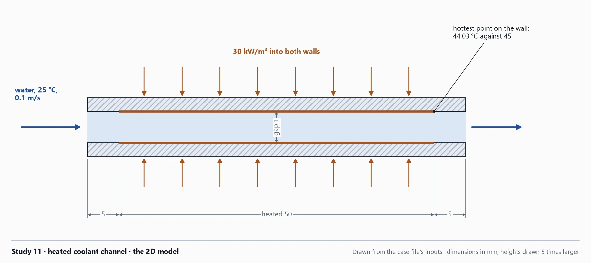
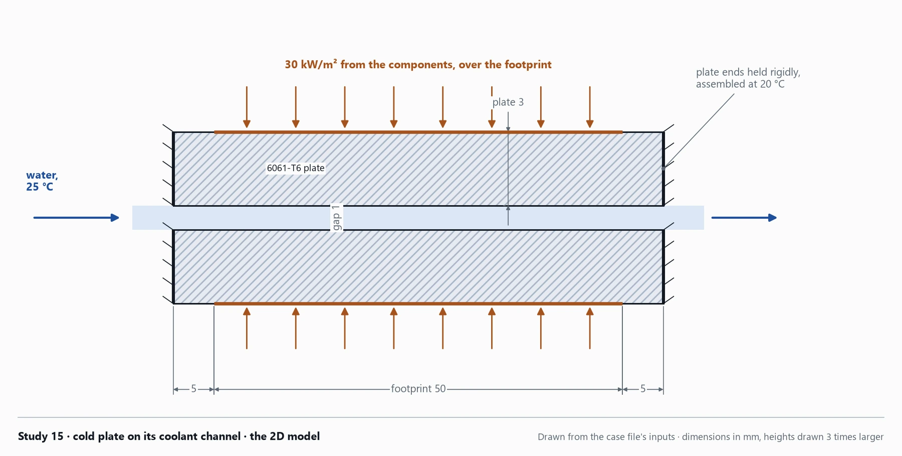
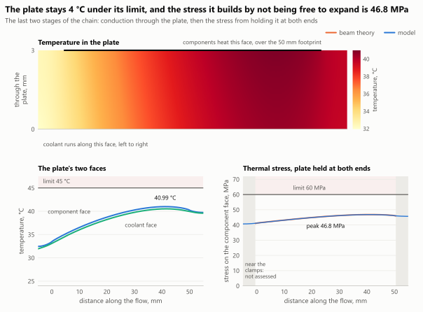

Cold-Plate Channel Heat Transfer
The Question
A cold-plate passage, 1 mm deep, carries water at 25 °C and 0.1 m/s. Electronics heat both walls at 30 kW/m² over 50 mm. Does the wall stay at or under 45 °C, does the coolant warm up by no more than 10 K, and how much heat flux could the passage take?
The Answer
The coolant warms up by 7.2 K, inside its 10 K budget, and that result is verified. The energy balance closes to about one part in a trillion on every mesh.
The wall peaks at 44.03 °C, 0.97 K under the limit, and it matches the independent reference within 0.6 %. My first mesh study couldn't put a number on the peak's uncertainty, so I held that verdict back. A rerun on finer meshes (40, 80 and 160 cells across the gap) settled it: 44.097, 44.029 and 44.029 °C, an uncertainty of 0.23 % of the temperature rise. With 40 cells across the gap, the wall reaches 45 °C at about 31 kW/m².
Why It Matters
Liquid cooling works by two things happening at once. The coolant warms as it picks up heat, which a simple energy balance gives. And the wall has to be hotter than the coolant to push the heat in, by an amount that depends on how well the flow carries heat away from the wall. That second part is the hard one, and it's what limits the electronics.
There's a textbook number for it, but it assumes the temperature profile in the flow has fully settled. In a short passage it hasn't, and using the textbook number anyway gives a slightly wrong wall temperature. With under 1 K of margin, slightly wrong is enough to matter.
The Model
- Geometry
- A 1 mm gap between two walls, in 2D: a 5 mm unheated entry, 50 mm heated, 5 mm exit.
- Fluid
- Water with constant properties at 25 °C: density 997 kg/m³, viscosity 0.89 mPa·s, specific heat 4180 J/kgK, conductivity 0.607 W/mK.
- Flow
- 0.1 m/s mean, laminar, entering with its velocity profile already settled.
- Heating
- A uniform 30 kW/m² into the water through both walls.
- Mesh
- 40, 80 and 160 cells across the gap.
- Analysis
- Steady laminar flow, then the temperature carried by it, in OpenFOAM 14.
- What's measured
- The rise in the mean coolant temperature, and the highest wall temperature, which is at the end of the heated length.

The case file: recorded assumptions, limits and inputs
This is the study's own record, written before the run and saved with it, in the shorthand of the case file.
cases/heated_channel_mesh_r2.toml ↗
2D laminar water channel (1 mm gap, 0.1 m/s) with both walls heated at 30 kW/m2 over 50 mm; OpenFOAM incompressibleFluid + scalarTransport; cells across the gap 40 / 80 / 160, verified against the Graetz thermal-entry solution.
Assumptions, and How Each Is Checked
- Constant water properties at 25 C (temperature rise under 20 K), so temperature is a passive scalar.
- Hydrodynamically developed inflow: parabolic profile at an exact flow rate, 5 mm unheated entry.
- Uniform heat flux into the water on both walls; the plate's conduction is not modelled (no conjugate heat transfer).
- 2D: the passage is much wider than the gap (side walls neglected; the 3D duct study shows a 3 % effect on flow).
Limits
- Synthetic geometry and loads; not calibrated to a product.
- No conjugate conduction in the plate, so real wall temperatures would be smoothed along the length.
- Checks establish numerical verification against the Graetz solution and the energy balance only; no test data.
Inputs
| Input | Value |
|---|---|
| gap_mm | 1 |
| heated_length_mm | 50 |
| entry_length_mm | 5 |
| exit_length_mm | 5 |
| mean_velocity_m_per_s | 0.1 |
| density_kg_per_m3 | 997 |
| dynamic_viscosity_Pa_s | 0.00089 |
| specific_heat_J_per_kgK | 4180 |
| conductivity_W_per_mK | 0.607 |
| inlet_temperature_C | 25 |
| wall_heat_flux_W_per_m2 | 30000 |
| cells_across_gap | 40 |
| cell_aspect_ratio | 5 |
How It Works
OpenFOAM solves the flow first, then the temperature field the flow carries. Because the water warms by less than 20 K, its properties are held constant, so the temperature doesn't change the flow and the two can be solved one after the other.
The reference is the Graetz problem, the classical solution for heat transfer into a flow whose temperature profile is still developing. I solved it separately and checked that solution too, against the textbook fully developed value and the energy balance, before comparing the simulation with it.
How I Checked It
- Against the thermal-entry solution. The simulated wall temperature matches it within 0.03 to 0.6 % of the temperature rise along the heated length.
- Energy balance. Heat in equals heat carried out to about one part in a trillion, and the temperature field stops changing to within 10⁻¹¹ of the rise.
- Why the separate reference matters. The flow is still thermally developing at the end of the heated section. The Nusselt number there, the measure of how well the flow takes heat from the wall, is 8.34 and not the textbook 8.24. A hand calculation that assumed developed flow would be slightly off.
- Mesh refinement. Three meshes, each twice as fine, with the peak wall temperature settled to 0.23 % of the rise.
What I Caught Along the Way
- A verdict held back, then settled. The standard numerical scheme overshoots by 0.06 to 0.11 K at the last heated cell, which is exactly where the peak is. It errs on the safe side, but it's why the first mesh study couldn't settle the peak. On finer meshes the overshoot shrinks and the peak moves upstream, which is why it took 160 cells across the gap to settle.
- A fix that made it worse. I tried four bounded schemes that get rid of the overshoot. All of them flip-flopped from one iteration to the next and never closed the energy balance, and damping the iterations just hid the problem. I went back to the scheme that converges exactly and let the checks bound its error. I kept every failed run and didn't change any tolerances.
Limits, and What I'd Do Next
- The heat is applied as a fixed flux straight at the channel wall, so the plate's own conduction isn't in this model. In a real plate that conduction smooths the wall temperature along the length. Study 15, the next one on this page, adds it.
- 2D: the passage is much wider than it is deep, so the side walls are left out. The 3D check in study 5 showed a 3 % effect on the flow.
- Constant water properties, reasonable for a rise under 20 K.
- The geometry and loads are made up, and there's no test data.
Evidence
Run reports, with every check and the saved inputs
Cold Plate, the Full Thermal Chain
The Question
Electronics put 30 kW/m² into an aluminium cold plate over a 50 mm footprint. The 3 mm 6061-T6 plate sits on a 1 mm water channel (25 °C inlet, 0.1 m/s) and is bolted at both ends to a rigid frame, assembled at 20 °C. Does the component face stay at or under 45 °C, does the coolant warm by no more than 10 K, and does the thermal stress in the plate stay under 60 MPa? It builds on study 11, which applied the heat straight to the channel wall.
The Answer
Yes, on all three counts, with mesh uncertainty of 0.035 % or less on every answer. The plate spreads heat sideways, so 16.8 % of it reaches the coolant outside the footprint. Held at both ends, the plate can't expand, which puts it in compression at −44 MPa with some bending on top.
Why It Matters
Real thermal problems rarely stop at one kind of physics. The coolant sets the wall temperature. The plate conducts heat from the component to that wall, and spreads it sideways on the way. Then the warm plate tries to expand, and if its mounting stops it, that becomes stress. Each step depends on the one before.
Chaining models is where errors hide. A small mistake in the flow carries into the temperatures and then into the stress, and by the end nobody can tell where it started. So the rule in this study is that each stage has to pass its own check against an independent reference before the next stage is allowed to use its result.
The Model
- Geometry
- A 2D slice: a 1 mm water channel with a 3 mm aluminium plate on each side. The heated footprint is 50 mm long, and the plate runs on past it at both ends.
- Coolant
- Water at 25 °C inlet, 0.1 m/s, laminar, constant properties.
- Plate
- 6061-T6: conductivity 167 W/mK, Young's modulus 68.9 GPa, Poisson's ratio 0.33, thermal expansion 23.6 × 10⁻⁶ per K, yield 276 MPa.
- Heat
- 30 kW/m² into the plate's outer face over the footprint. All of it leaves through the coolant.
- Mounting
- Both plate ends held rigidly, with the plate stress-free at the 20 °C assembly temperature. This is the stiffest possible frame, so it gives the highest stress.
- Mesh
- 40, 60 and 80 cells across the gap, with the plate mesh refined to match.
- Analysis
- OpenFOAM 14 for the coolant, CalculiX 2.22 for the plate's conduction and then its thermal stress.

The case file: recorded assumptions, limits and inputs
This is the study's own record, written before the run and saved with it, in the shorthand of the case file.
cases/cold_plate_mesh_r1.toml ↗
Cold plate: OpenFOAM coolant channel (1 mm gap, water 0.1 m/s) coupled to CalculiX conduction in a 3 mm 6061 plate with 30 kW/m2 over a 50 mm footprint, then CalculiX thermal stress with the plate clamped at both ends; meshes 20 / 40 / 80 cells across the gap, plate refined with them.
Assumptions, and How Each Is Checked
- Symmetric construction: a plate and a component on each side of the channel, so both channel walls see the same flux; checked: top and bottom wall temperatures agree.
- Constant water properties at 25 C, so temperature is a passive scalar on the frozen flow (rise under 20 K).
- Developed laminar inflow; checked: Re and the peak inflow velocity.
- 2D: plate and channel much wider than the gap (side walls neglected; the 3D duct study shows a 3 % effect on flow).
- Perfect thermal contact between component and plate, and between plate and water (no interface resistance): synthetic.
- Plate ends adiabatic; all component heat leaves through the coolant.
- Frame rigid: each plate end held in x over its whole face (no growth, no rotation) and in y on its mid-thickness line; plate held in width (plane strain). This bounds the stress from above; a compliant frame would lower it.
- Linear elastic, small deflection; checked: peak stress under yield, membrane stress well below buckling.
- Stress-free at the 20 C assembly temperature: synthetic.
Limits
- Synthetic geometry, loads and limits; not calibrated to a product.
- Stress near the supports (within 4.5 mm, 1.5 plate thicknesses, of each end) is not assessed: the clamped corners are singular and the real bolt joint is not modelled.
- One-way thermal-to-structural coupling (deformation does not change the heat transfer).
- References: the thermal-entry solution and beam theory are model form (no axial conduction; plane sections); the plate series is exact for the data it is given.
- No physical test data.
Inputs
| Input | Value |
|---|---|
| gap_mm | 1 |
| footprint_length_mm | 50 |
| entry_length_mm | 5 |
| exit_length_mm | 5 |
| unplated_length_mm | 5 |
| mean_velocity_m_per_s | 0.1 |
| density_kg_per_m3 | 997 |
| dynamic_viscosity_Pa_s | 0.00089 |
| specific_heat_J_per_kgK | 4180 |
| conductivity_W_per_mK | 0.607 |
| inlet_temperature_C | 25 |
| cells_across_gap | 40 |
| cell_aspect_ratio | 5 |
| component_heat_flux_W_per_m2 | 30000 |
| plate_thickness_mm | 3 |
| plate_conductivity_W_per_mK | 167 |
| coupling_htc_W_per_m2K | 2500 |
| youngs_modulus_MPa | 68900 |
| poisson_ratio | 0.33 |
| expansion_per_K | 2.36e-05 |
| assembly_temperature_C | 20 |
| yield_strength_MPa | 276 |
| interior_margin_mm | 4.5 |
| uniform_check_rise_K | 20 |
How It Works
Three solvers run in a chain.
- Coolant (OpenFOAM). The laminar flow in the 1 mm gap, then the coolant temperature for the heat flux the plate delivers.
- Plate conduction (CalculiX). The plate takes the coolant's wall temperature as its boundary condition. The two are solved in turn until the temperature and the heat flux at the wall agree on both sides, which takes 26 to 28 passes.
- Thermal stress (CalculiX). The converged plate temperatures go into a stress model with the ends held.
One command runs the whole chain at three mesh densities, and the chain is refined together, not one stage at a time.

How I Checked It
- The coolant. Its wall temperature matches the thermal-entry solution with the same heat-flux profile to 0.08 %, and its energy balance is exact to 2 × 10⁻¹².
- The plate. Every node is within 0.012 % of an exact Fourier-series solution, using the boundary data the plate actually had.
- The stress. A uniform temperature rise through the same stress model gives the exact restrained stress to 5 × 10⁻⁸, and the peak stress matches beam theory to 0.06 %.
- The handoffs. The heat crossing each handoff balances to 4 × 10⁻⁹ or better, so nothing is lost or invented between solvers.
What I Caught Along the Way
- An error that wouldn't shrink. In the first mesh study the error against the reference peaked at 5.5, 2.8 and 6.3 % and didn't fall with refinement. It sat exactly at the plate edges, where the heat flux steps from zero and neither the mesh nor the reference resolves the wall temperature. Two gap heights away from each edge it converged at second order, so the check now leaves out that band and keeps its 1 % tolerance.
- A loop that ran out of passes. The coupling loop hit its pass limit on the finer meshes. It was converging, just slowly, because OpenFOAM was solving every inner step to machine precision. Loosening that changed the answers by under 5 × 10⁻⁷ and made each pass three times faster.
Limits, and What I'd Do Next
- It's a 2D slice through the plate and channel, with no side walls or manifolds.
- Constant fluid properties and laminar flow. Perfect thermal contact between the component, the plate and the water, with no interface resistance.
- The plate ends are rigidly clamped. A real bolted end has some give, which would lower the stress. Stress within 4.5 mm of each end isn't assessed, because the clamped corners are singular and the real joint isn't modelled.
- The coupling runs one way from temperature to stress: the plate's deformation doesn't change the heat transfer.
- The limits are made up, and there's no test data. A 3D model with side walls is the natural next step.
Evidence
Run reports, with every check and the saved inputs